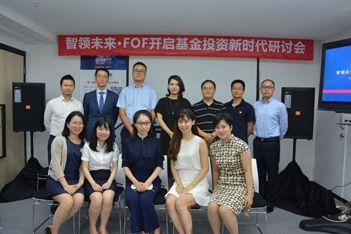

金融界网站7月27日讯 公募FOF步伐渐行渐近。作为业内具有划时代意义的大事件，公募FOF的到来持续引发市场各方的热切关注。7月27日下午，继北京之后，由金融界联合南方基金、招商基金、广发基金、鹏华基金、中邮基金、融通基金、民生加银、前海开源基金等38家公募基金公司共同举办的“智领未来.FOF开启基金投资新时代暨2017年全球资产配置与风险管理研讨会”在深圳成功举行。本次会议群贤毕至、盛况空前，与会嘉宾就中国公募基金行业发展趋势、FOF的准备工作、优势、发展前景等问题进行了激烈的观点交流和思维碰撞，诚为行业顶级盛会。
会上，南方基金南方基金首席市场官吴增涛先生和中国金融在线集团智能金融业务总经理何剑波先生作为主题演讲环节的主讲嘉宾，发表了关于FOF与大类资产配置的主题演讲。
吴增涛在演讲中表示，作为业内FOF业务领域的先行者，南方基金高度重视FOF业务的开展，专门成立宏观研究与资产配置部，负责大类资产配置策略、资产投资模型和资产投资组合的研究，并进行资产配置类产品的投资管理工作。为抢占FOF市场制高点，南方基金抢先与Morningstar晨星中国达成深度合作，借助后者在基金研究、资讯服务、资产配置等方面积淀的丰富经验和优势为南方基金FOF组合提供高效的投资管理支持。
吴增涛指出，大多数人参考美国FOF的发展情况，预估中国FOF的发展空间巨大。但是这种简单的类比，似乎说服力不强，因为美国FOF发展拥有自身的条件，美国市场与中国存在很大的差异。我们应该更加关注如何根据中国的实际情况，研发满足投资者需求的FOF产品。目前，南方基金已基于成熟的风险平价模型，以绝对收益为目标，发行了专户FOF产品，取得了良好的业绩。同时，已上报的公募FOF产品正在等待审批。后续，将配合养老金体系第三支柱的推出，结合个人投资者养老、教育、买房等理财目标，匹配机构投资者特定的资产管理需求，推出能够在未来一定阶段内满足客户需求的系列FOF产品，通过量身定制的形式为客户提供资产管理解决方案，打造南方SUPER FOF的品牌。
谈及公募FOF的意义，吴增涛认为，FOF不单单是一种新的理财产品，重要的是，FOF能够实现底层资产投资与大类资产配置的专业化分工，将开创基金行业新的时代。一方面，在产品设计层面引入财富管理的理念，弥补行业价值链缺失，创造新的价值，可根据投资者的投资目标、投资期限和风险偏好设计产品。另一方面，在投资运作层面创造新的系统化分工模式，让专业的人做专业的事，形成新的团队，专注于大类资产的研究与投资。这将有利于推动基金销售从“产品导向”向“客户需求导向”转型，推动基金公司从“投资管理机构” 向“财富管理机构”转型，从“产品制造商”向“整体解决方案提供商”转型。
在吴增涛看来，公募FOF的推出很可能重塑行业格局，引领基金公司在更高层次进行全方位的竞争。FOF、基金组合、智能投顾、私人财富管理以及机构客户解决方案等，从本质上来讲，都是以客户需求为导向，以客户目标风险与收益为出发点，为客户提供资产配置与管理服务。未来，基金公司的竞争将从产品质量的竞争，进一步升级到资产配置能力、客户需求挖掘能力、产品设计能力以及智能技术应用能力的全方位竞争。
作为国内首批成立的基金公司，南方基金凭借过去19年的优良业绩和良好的风险控制树立了稳健风格的金字招牌，在备战公募FOF业务方面已具备厚积薄发之势。今年上半年，市场持续震荡，南方权益、固收条线继续保持了稳健业绩。Wind数据显示，截至6月30日，南方旗下净值增长率超过10%的基金有26只，16只基金的业绩涨幅跻身同类前10%，43只基金业绩排名同类前20%。从更长期业绩来看，南方基金旗下有18只产品近5年年化回报超10%，且该18只基金的近5年累计收益率均超70%，显示出不俗的长跑能力。
根据海通证券(14.80 +0.07%,诊股)7月发布的报告显示，南方旗下权益基金无论是绝对收益还是超额收益，近半年、近一年、近两年、近三年、近五年内的业绩排名都稳居行业前1/3、前十大基金公司前三的身位，表现出出色的长跑能力和业绩管理的稳定性。近五年来（2012年-2016年）南方基金凭借出色的投研业绩和风控实力为投资者赚取660.23亿元的累计回报，近三年（2014年-2016年）累计超过514亿元。作为国内首批成立的基金公司，南方基金已用过去19年的优良业绩和良好风控打出了“稳健”风格的金字招牌。没有大牛市时的昙花一现，更没有股市低迷时的随波逐流，南方基金始终用“稳”在诠释资产管理的真谛。
继吴增涛之后，中国金融在线集团智能金融业务总经理何剑波先生就智能金融与FOF的关系，发表了自己的看法。
何剑波称，很多老百姓(45.36 -2.11%,诊股)都是在市场相对高点买基金，而在相对低点不愿意买基金，所以时机的错配导致很多基民并没有赚到钱，他以自己的夫人为例打趣道，“包括我夫人也是，买了这么多年基金，也没赚到什么钱，这是事实。”而基金公司出于无奈，为了迎合客户的需求，在基金发行中也只能时机错配，进一步造成了基民盈利更加困难。
何剑波认为，公募基金本身平滑风险的效果是极其有限的，由于中国市场尤其是股票市场中，个股与板块之间的高度相关性，基金本身第一次配置并没有很好地对冲掉系统性风险，而通过FOF可以很好的解决这一问题。“通过FOF能不能把商品、债券和国外的权益类产品集中起来做二次平滑，对风险控制是不是更加有利？” 何剑波表示。
何剑波认为，智能金融的配置内核就是FOF，但是，基于国内的市场环境，实践中仍然有不少的问题存在，尤其是涉及到境外市场的资产配置方面，由于资本管制，QDII 的额度总是处于非常紧张的状态，因此，智能化配置当中出现一些阻碍和问题，但是，相对来说还不错，风险控制的也还比较好。
以用户需求为导向，智能金融首先在于精准的用户画像。何剑波表示，用户画像是智能金融当中非常重要的子系统。
“有了用户分析子系统之后，如果把主动管理基金纳入进来，首先就要对基金进行打分，或者对基金做标签，我们做了两个分析系统。”何剑波称，一个系统是对基金风格的分析系统，因为只有基金风格相对固定，不会发生太大飘移的时候，才有智能配置的价值。另一个系统是基金评价体系。“我根据基金收益、风险的特征，希望找到比较好的基金评级结果。”通过科学的评价体系，何剑波希望可以寻找到风控较为稳健，首席持续性较好的基金标的。
主题演讲环节之后是十分钟的茶歇间隙。随后，是本次研讨会的嘉宾圆桌论坛环节，在圆桌论坛环节，到场嘉宾热议公募基金产品的创新问题。
公募产品要有所创新，银行、保险的需求改变，特别是终端零售需求客户的改变影响到公募基金产品有一些变化，甚至做了一些创新，其中公募FOF也是创新的一个类型。各家机构如何看待这种变化，并做出产品方面调整？
对此，民生加银基金资产配置部负责人王铮表示，从以前的从业经验来看，如果是绝对收益的产品，客户是比较感兴趣的，所以民生加银想从绝对收益入手。王铮认为，国内的投资者教育是一个比较长期的过程，但现在的大环境比较有利。给客户提供的产品，风险可控，收益有一定的竞争力后，当客户看到这个市场的价值之后，慢慢对产品的接受度也会越来越高。
鹏华基金资产配置与基金投资部FOF投资副总监赵强认为，创新要跳出产品的层面，就是说它是公司的层面，FOF同样如此，中国资本市场之前是公募基金不能投公募基金，这是法规的要求，现在进行了供给侧改革之后，公募基金未来的发展空间非常大，这个过程中就需要不断的创新，不断适应供给侧变化的要求去壮大基金行业。
前海开源基金FOF投资部负责人苏辛认为，公募产品的创新主要体现在以下几点：一、投资目标的创新方面，传统公募产品主要以做相对收益为主，现在不断有一些做绝对收益或者降低波动率目标的公募产品开始出现，投资目标的改变也会导致公募产品投资策略的变化，除了传统多头策略之外，多空策略、绝对收益策略、波动率策略会越来越多的应用到公募基金产品中。二、目前公募产品的创新还在于投资范围的创新，传统公募产品的投资范围只有股票、债券、货币市场工具，现在投资范围已经扩展到商品、基金、REITs、新三板、非上市股权等投资标的。三、公募产品的创新还存在客户边界的创新，传统的公募主要是盯住银行零售客户，现在公募产品的目标客户已经扩展到企业客户、互联网客户、高净值个人客户。四、其他创新，主要是产品要素方面的创新，包括浮动费率、杠杆、分级等。FOF也是一个创新，我们觉得目前市场上的ETF或者被动型债券基金还比较少，将来这方面的产品线有可能进一步丰富和发展。
广发基金资产配置部投资经理朱坤表示，FOF基金是2.0时代，所有做FOF的人都是围绕目标收益、目标风险做工作，产品模式是第一个创新。第二个创新是大家对于各种各样投资技术上的创新，比如大家以前会想我选一个股票，怎么构建一个股票组合。
中邮基金创新业务部FOF拟任基金经理王喆表示，近几年因为客观因素的变化，大部分产品创新还是停留在申赎方式、投资范围等方面，真正的产品创新只有分级基金。王喆认为，随着FOF的推出，各基金公司，尤其是已经有产品布局的公司，已经开始加速了指数覆盖，但起步较晚的公司在这方面会比较困难，未来大公司以完善自己的产品布局为核心，中小基金公司可能会将精力放在差异化竞争上；此外，FOF基金不仅会催生市场对于工具化产品的需求，也是现有工具化产品的替代。
南方基金宏观研究与资产配置部高级研究员夏莹莹表示，从全球来看，未来产品发展的几个方向，一是另类资产的变化，还有一个是怎样为客户提供最好的综合解决方案，解决方案的提供涉及到你对机构客户、个人客户如何深挖他们的需求，只有满足需求的产品，才能在市场中活下来。
招商基金FOF拟任基金经理徐冉认为，产品创新更重要的还是需求端和供给端的创新，FOF产品在这个阶段出来的创新是非常有市场空间的。
徐冉认为，未来资管行业持续往专业化发展是一个必然的方向，公募基金已经有快二十年的历史了，不管是从规范性、专业化还是从持续的业绩回报来讲，都给客户创造了一定的价值，是有存在价值的，未来绝对收益产品非常有空间。
融通基金FOF业务负责人李勇表示，基金行业有两个问题，一是对普通投资者来说，多数不会做风险匹配，而是做收益匹配，特别是看到权益性的产品，他想的是能赚多少钱，而不是想要承受多的风险。其次是资产配置能力完全反过来，在风险最大的时候，期望风险收益最小的时候，增配权益性产品，还是在风险低的时候、期望收益高的时候，低配权益性产品，总体来说就是资产配置能力的欠缺。
李勇表示，另一方面，从供给端来说，现在基金产品已经有很多，但风险收益产品的连续性还不够，固定收益的产品，收益很稳定，但增值效果没那么好，权益类可能收益好，但波动又很大，普通投资者拿不住，这也是基金收益好，但基民赚不到钱的原因，中间缺乏一个风险适中，能带来比较好增值效果的基金。真正风险适中又有增值潜力的产品，没有形成比较明确的系列或者特征，而FOF正好可以弥补这一缺口，这是产品创新比较核心的一点。